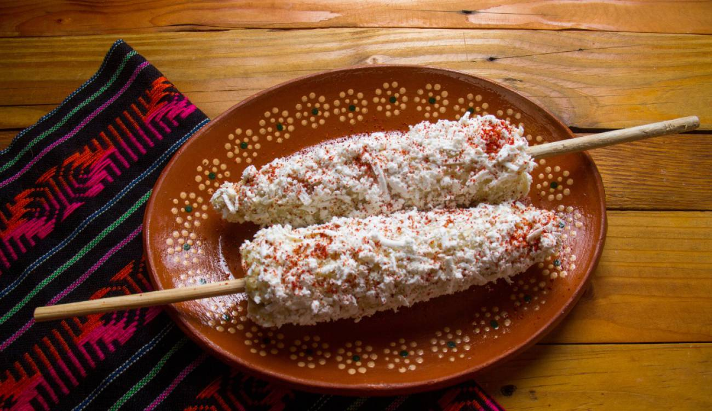

Elote

Description
It's simple, but delicious, and Elote consists on a corncob (boiled or roasted), with some lemon, mayonnaise, grated cheese, salt, and "chile en polvo", this is like chilli powder.
Ingredients
- Corncob
- Lemon
- Salt
- Mayonnaise (optional)
- Grated cheese (optional)
- Chile en polvo (chilli powder)
Steps
-
Make a corncob choice, it doesn't matter which one you prefer, just select one:
- Boiled corncob
- Roasted corncob
- Squeeze the lemon over the corncob.
- Spread the mayonnaise on all the corncob surface.
- Add some chile en polvo (be careful, it's really hot).
- Add a pinch of salt.
- Enjoy!